尿酸不只是痛風，它可能是代謝症候群的早期警訊
2026-10-03
尿酸在代謝症候群真正發生前就已升高，能透過多條發炎與代謝路徑削弱胰島素敏感度，是代謝健康狀況的早期感應器。

80 篇文章
尿酸在代謝症候群真正發生前就已升高，能透過多條發炎與代謝路徑削弱胰島素敏感度，是代謝健康狀況的早期感應器。

牙周病與糖尿病互為雙向關係，牙周發炎會影響胰島素訊號，Cochrane 分析顯示牙周治療3到4個月後 HbA1c 平均下降0.43%。
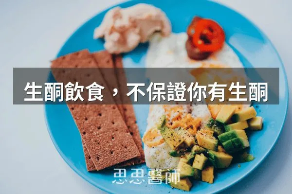
吃生酮飲食不等於身體真的在生酮，關鍵在胰島素能否降下來，胰島素阻抗者即使飲食標準，酮體生成與利用也可能打折。

長輩不必戒碳水，建議午餐吃碳水並接著運動，晚餐少量且在睡前三到四小時，同時每餐蛋白質要給夠，才能兼顧血糖與肌肉。
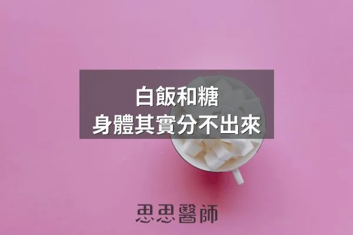
David Ludwig 主張白飯等精緻澱粉與糖在體內都快速變成葡萄糖並推高胰島素，建議以全穀、豆類、原型澱粉取代精緻澱粉。

外食時醬料常藏著大量糖與種子油，作者習慣只看糖和用什麼油，建議避開糖排前三項或種子油底的醬料，或改用沾的。

胰島素升高會抑制尿酸排出、促進重吸收，使尿酸與代謝症候群密切關聯，所以即使飲食克制，胰島素沒控制好尿酸還是難以降低。

粒線體問題是數量不足加燃料過量的容量問題，而非構造損傷，運動與低碳飲食可增加粒線體數量與調整代謝負載。

超加工食品含有乳化劑與改性澱粉等添加物，會破壞食物基質、傷害腸道菌相，同時繞過飽足感訊號，導致過量進食。

長期高胰島素血症會刺激胰臟腺泡細胞過度生產消化酵素，引發反覆發炎，是胰臟癌癌前病變形成的關鍵驅動因素。

澱粉冷藏後能形成抗性澱粉的效果取決於直鏈澱粉比例，長粒米和義大利麵冷藏有效，糯米和地瓜效果有限。

木耳含有的多醣體和膳食纖維，透過改善腸道菌相、降低飯後血糖峰值，對胰島素阻抗和代謝健康有幫助。

糖化終產物不只來自糖，高溫烹調的蛋白質與脂肪也會產生 AGEs，所以控糖者也要注意烤、炸等烹調方式，並減少頻率。

牛奶升糖指數低但刺激胰島素分泌幅度意外高，其胰島素指數逼近白麵包，對血糖和代謝有特殊影響。

骨頭是內分泌器官，造骨細胞分泌的骨鈣素參與血糖調控，需維生素 K2 活化，糖尿病患者骨密度正常仍可能有較高的骨折風險。

甲基乙二醛（MGO）的糖化能力約為葡萄糖的兩萬倍，血糖尚未達糖尿病標準時就可能累積，控制血糖波動並支持麩胱甘肽有助降低累積。

脂毒性並非吃脂肪造成，而是肝臟用過量碳水自製脂肪，加上脂肪組織失能溢出游離脂肪酸，低碳高脂者三酸甘油酯反而可能較低。

極低碳水化合物攝取可能升高皮質醇，全食物碳水透過色胺酸途徑提升血清素，有助降低壓力荷爾蒙反應。

阿茲海默症可視為大腦特有的胰島素阻抗疾病，涉及胰島素訊號失調和澱粉樣蛋白清除障礙，代謝控制攸關腦部健康。

哈佛 2023 年追蹤 136,432 人 24 年，發現澱粉類蔬菜讓體重上升最多，水果與非澱粉類蔬菜則較少增重，但胰島素阻抗者仍要少吃水果。

2026 年研究追蹤 195 位第 2 型糖尿病患者，低醣介入組 21 項發炎指標中 19 項顯著改善，作者據此說明低醣與單純少吃的差異。

作者自己做五天鯖魚斷食，氣酮升到 23.0 ppm、空腹血糖由 107 降到 85 mg/dL，並討論其限制，屬個人經驗分享。
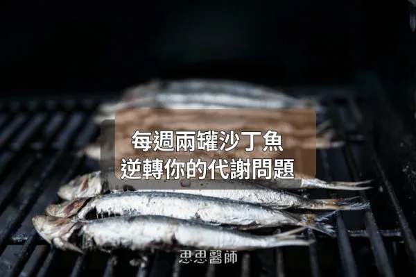
2021 年隨機對照試驗中，糖尿病前期長者每週多吃兩罐沙丁魚，一年後 FINDRISC 極高風險比例由 37.3% 降到 7.7%，胰島素阻抗也下降。

魚斷食透過高蛋白保肌肉、高Omega-3啟動FGF-21和脂肪燃燒，進入類斷食代謝狀態卻難達深層自噬，相比水斷食各有不同機轉側重。

血糖變異係數比HbA1c更能反映血糖波動傷害，需持續血糖監測計算，健康人CV平均17±3%而非糖尿病篩查標準36%，長期穩定<15%符合代謝健康目標。

身體無『必需碳水化合物』分類但非完全無需，紅血球無粒線體只代謝葡萄糖，人類AMY1澱粉酶基因演化中持續複製說明身體對醣的適應需求。

2025年美國飲食指南終止低脂乳製品優先建議，全脂牛奶含C15:0和C17:0降低第二型糖尿病風險30%，去脂肪同時失去保護成分及延緩乳糖吸收的機制。

血糖機測葡萄糖不測果糖，水果同含三種糖並經蔗糖分解，果糖進肝臟繞過血糖控制轉化為脂肪和尿酸，血糖讀數只揭示代謝故事的一部分。

飯後血液指標反映胰島素反應與代謝控制的實際狀況，往往比飯前數值更能說明真實身體狀態。

血液三酸甘油酯的主要來源是肝臟用糖製造的，而非直接來自食物脂肪，吃糖越多製造越多。

研究顯示先吃蔬菜和蛋白質、最後才吃碳水，能讓餐後血糖高峰降低，文中提到糖尿病前期族群的血糖曲線下面積降低了 38.8%。

血糖劇烈波動而非平均血糖值才是氧化壓力與血管破壞的關鍵驅動因素，餐後尖峰與快速下降會導致粒線體過度產生超氧化物。

乳清蛋白在缺乏運動時會過度激活mTORC1導致胰島素阻抗惡化，搭配阻力訓練時則能精準將胺基酸推進肌細胞合成肌肉。

Omega-7 被稱為脂肪因子，文中說它能協助處理糖分、強化腸道防線、關閉 NF-κB 發炎開關並守護胰島素分泌細胞，沙棘果與夏威夷豆是主要來源。

作者修正過去的建議，認為吃蛋糕最好在高強度阻力訓練後 30 至 60 分鐘內，此時肌肉糖原缺口與 GLUT4 活性可讓糖分優先被肌肉吸收。

一項隨機對照交叉試驗發現，餐後僅 1 分鐘舒適步調上下樓梯就能降低血糖與胰島素，3 分鐘更能改善胰島素敏感度，受試者主要是健康年輕人。
一項 2025 年研究顯示，糖尿病前期患者在坐姿下規律做比目魚肌踮腳，血糖上升幅度平均降低約 32%，但樣本僅 10 人、仍屬初步結果。

飯後運動15分鐘比每天晨間空腹快走45分鐘更能有效控制血糖，能減少餐後血糖約40至50 mg/dL，HbA1c下降幅度優0.7%。

洋車前子含豐富的阿拉伯木聚醣，每日攝取10至15克可使糖化血色素下降約0.97%，效果媲美某些口服降糖藥。

比較省略早餐與省略晚餐的限時進食，作者整理證據認為早進食在血糖、脂肪代謝與食慾調控上較佔優勢，但晚進食因社交因素更常被實行。

水果中的果糖代謝路徑與葡萄糖不同，過量攝入會繞過胰島素調節直接傷害肝臟與代謝，應限量食用並搭配纖維質。

生理期前的甜食渴望源於雌激素下降導致血清素濃度下跌，攝取富含色胺酸的食物與維生素B6、鎂可協助合成血清素。

生酮飲食搭配低醣飲食在個案報告中與血糖改善和視網膜剝離自行恢復相關，但療效因人而異，重要是在醫療團隊監督下進行。

黑米屬低升糖指數食物（42-50）、膳食纖維和花青素含量高，因含較多直鏈澱粉消化速度慢，更能穩定血糖和提升飽足感。

極低脂肪高糖飲食能重新訓練胰島素敏感度和代謝靈活性，但長期低蛋白會傷肌肉和荷爾蒙，已有胰島素阻抗或脂肪肝者應避免。

醋的醋酸可降低餐後血糖並增加飽足感，作者建議隨餐、稀釋後飲用，但也有研究指出醋對血糖沒有影響，只能當輔助、不能取代治療。

空腹血糖與 HbA1c 正常仍可能有胰島素阻抗，Kraft test 以 100 克葡萄糖測血糖與胰島素曲線，可在糖尿病前十年甚至二十年發現。

碳水會不會變成脂肪不只看吃多少，也看吃的時間，中午左右胰島素敏感度最高較適合，晚上則要少量並提早吃完。

依 One Type Talks 的實測，白米讓血糖從 100 飆到 210 mg/dL，各種米都會明顯升糖，作者推薦相對溫和的糙米和黑米。

將進食時間限制於12小時內可提升胰島素敏感性，與少量多餐相比，低頻率進食對血糖控制可能更有效。

代糖分為人工和天然兩種，人工代糖有多項副作用且與癌症風險相關，天然代糖如羅漢果糖和阿洛酮糖相對安全，不會刺激胰島素分泌且對代謝有益。
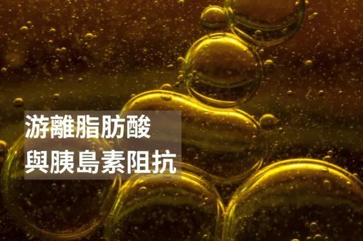
血中游離脂肪酸過高會抑制葡萄糖攝取與胰島素訊號，導致胰島素阻抗，應透過減少內臟脂肪與運動來改善。

腸道菌群產生的短鏈脂肪酸能促進GLP-1分泌與胰島素作用，透過增加纖維攝取與運動可改善胰島素阻抗。
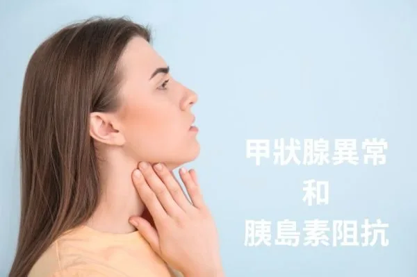
甲狀腺功能低下和亢進皆可導致胰島素阻抗，研究顯示兩者的HOMA-IR值顯著高於正常人，提示需評估胰島素阻抗風險。

當歸含當歸多醣體可有效降低空腹血糖，還能改善月經不調、保護腎臟和心血管，糖尿病患者應在醫師指導下監測血糖避免過低。

飽和脂肪與胰島素阻抗相關，不飽和脂肪、MCT和短鏈脂肪酸對胰島素敏感性有益，關鍵是選擇健康的脂肪與碳水來源達到平衡。

胰島素阻抗與碳水化合物、蛋白質與脂肪的來源及加工程度密切相關，選擇低升糖指數食物有助穩定分泌。

木糖醇是天然代糖且刺激胰島素效率約為蔗糖30至50%，對口腔與腸道健康有益但過量會引發副作用。
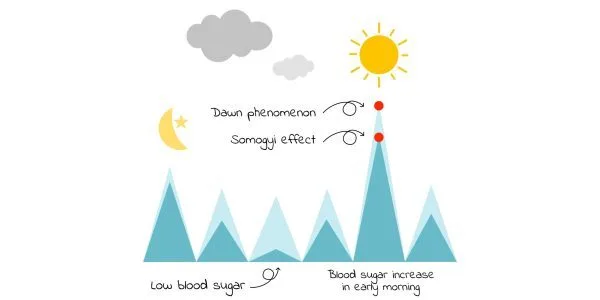
黎明效應由皮質醇和生長激素的晨間波動引起，而Somogyi效應源於夜間低血糖的反彈，可用連續血糖監測區分。

抗性澱粉經冷藏後的澱粉結構改變會降低升糖指數，對血糖影響因人而異，宜用連續血糖監測儀評估個人反應。

血糖超過160的高峰引發活性氧化物質和發炎激素增加，導致慢性發炎和血管損害，應避免易引起血糖急劇升高的食物。

糖尿病神經病變在第一型、第二型糖尿病患者和糖尿病前期患者都可能發生，症狀從麻木到燒灼感不等。

胰島素指數衡量進食後血液胰島素上升幅度，與升糖指數不同，高胰島素反應會導致胰島素阻抗和代謝問題。

苦瓜含有葫蘆素和苦味化合物，有助於改善血糖控制、促進消化、增強免疫力和可能的抗癌防護作用。
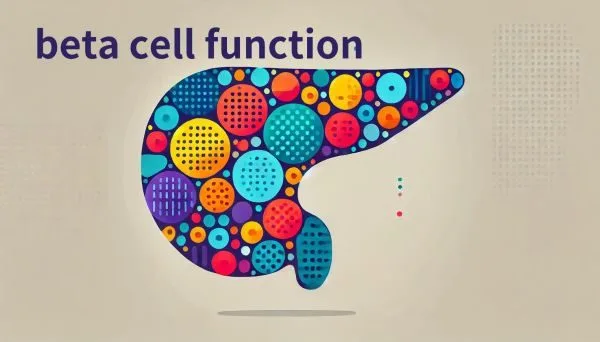
胰島素分泌細胞功能障礙在第二型糖尿病早期就出現，即使細胞數量未減少，強調治療應優先恢復細胞功能。

低碳飲食產生的暫時性胰島素阻抗屬生理反應，可透過檢驗糖化血色素或連續血糖監測與病理性區分。

快速澱粉如白麵包20至30分鐘完全吸收導致血糖急劇上升，慢速澱粉如糙米需1至2小時，能穩定血糖減輕胰臟負擔。
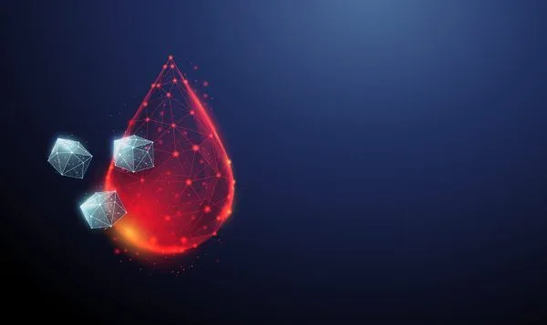
提升胰島素敏感度可透過改善睡眠、管理壓力、增加肌肉、飯後運動和間歇性斷食，並補充維生素D、鎂、鉻等保健品。
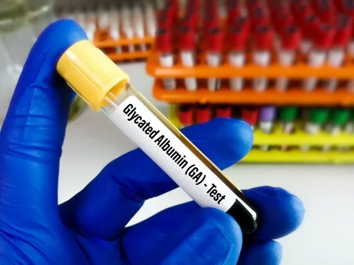
糖化白蛋白反映過去2至3週的平均血糖水平，比糖化血紅蛋白更適合評估近期血糖變化和紅血球周轉異常患者。

牛奶乳糖含量較高，脫脂牛奶糖分更多，可選堅果奶、椰奶、豆漿、無糖優格或鮮奶油作為低糖替代品。
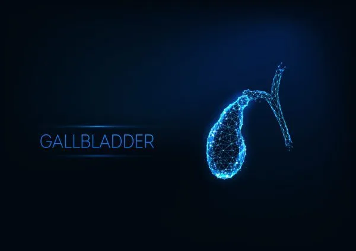
在體重正常且無糖尿病者中，胰島素阻抗對膽囊收縮功能有影響，低碳水飲食有助維持膽囊健康和避免膽汁濃縮。
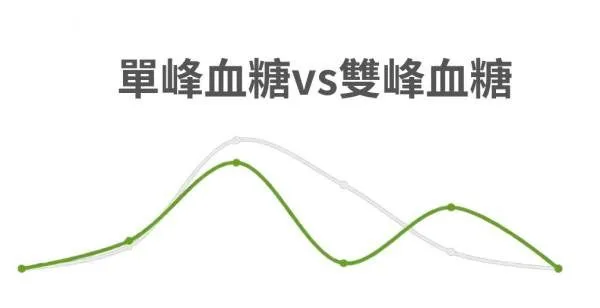
雙峰血糖曲線反映更強的胰島素分泌能力，單峰曲線的個體通常胰島素敏感度較低，兩者都應避免長期高糖飲食。
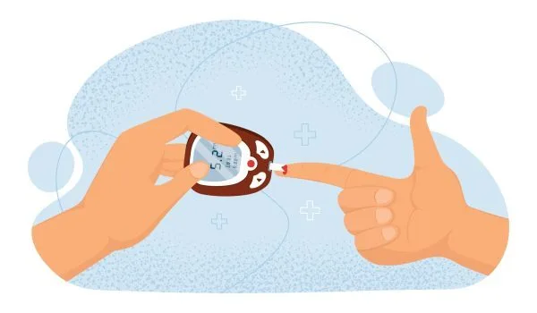
糖化血色素能粗略反映3個月平均血糖水平，比單點血糖測量更準確診斷糖尿病，但在某些情況下可能被低估或高估，若有疑慮可測量糖化白蛋白作為輔助指標。

反應性低血糖與高胰島素水平和胰島素阻抗有關，患者常在進食後症狀改善卻形成惡性循環，可透過減少碳水、增加蛋白質和蔬菜、避免麩質和乳製品、檢測胰島素濃度來改善。

1.5型糖尿病屬自體免疫型糖尿病，常被誤診為第二型，患者體型通常較瘦，胰島素分泌會逐漸減少，可透過檢測胰島素、C肽和自體免疫抗體確診，飲食方面建議採低碳水全食物飲食。

酒精經肝臟代謝產生致癌的乙醛，喝酒後臉紅的人因ALDH酵素缺陷導致乙醛堆積，食道癌風險為不紅者的14倍。
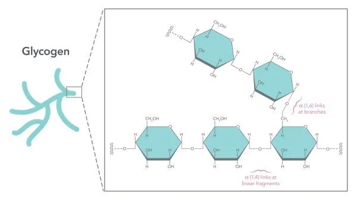
肝醣是耗盡血糖後的第一道能源，約18小時內用罄，與3倍水分結合，身體需學會利用脂肪才能維持長期能量。
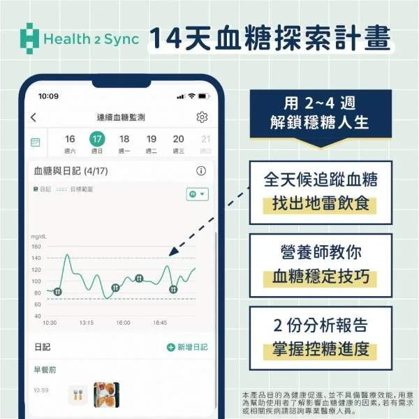
連續血糖監測搭配應用程式分析，能讓患者即時掌握飲食與運動對血糖的影響，幫助達成穩定控糖的目標。
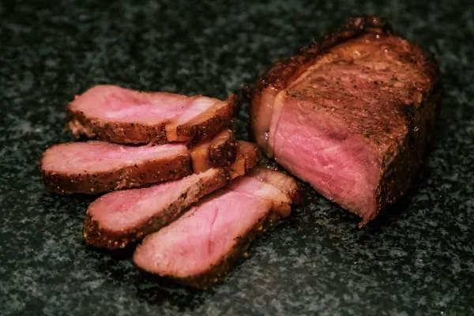
蛋白質會刺激升糖素引發糖質新生且血糖上升延遲數小時，若有胰島素阻抗應注意攝取量與進食順序。

GI值衡量食物升高血糖的速度，GL值再把每份碳水量納入計算，兩者要一起看，例如哈密瓜GI高達72但GL偏低。